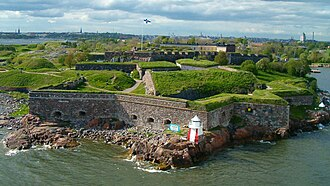

A preview appears only when your selection is precisely an article's title — never guessing, never covering your page with false matches. Prefer looser lookups? One switch also resolves redirects like “USA” → “United States”.
Our summer itinerary begins in Helsinki, where the ferries glide past the sea-fortress islands toward the old market square…
